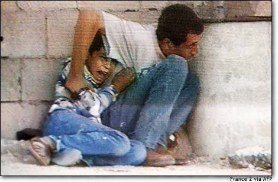

jamal Aldura and his son Mohammed, 12, hide behind a barrel where they tried to
protect themselves from Israeli-Palestinian crossfire on Saturday, Sept. 30. Seconds
after this image was captured by France 2 TV, the boy was struck by a bullet and
killed, and his father was seriously wounded.
--------------------------------------------------------------------------------------------------------------
Arrests were made in Israel over the killing of two Israeli soldiers by palestinian freedom fighters.
What is particularly disturbing about this event is that Israeli soldiers have been killing palastinian
cilivians even small children under the age of 14 and not a single organisation such as the UN
talks about investigating or arresting the perpetrators of these barbaric acts.
*Two* soldiers (soldiers which were part of a regime which shoots women and children) died and everyone in the
the western media is in uproar with front page stories and excessive coverage on TV. The American president
was quick to condemn the killing of the two cowardly Soldiers but failed to even acknowledge the brutal killing
of young children by the yahoudi klebs (read israeli soldier).
The palastinians cannot afford a US led intervention and investigation into the violence doing so would only
make matters worse for them. Asking the US to investigate is just like asking the jews to looking into there own
wrong doings. Obviously they are not going to find themselves at fault in relation to anything. A little food
for thought a third of the US gov is jewish ... go figure.
here are some stories which go unreported in the western mass media.
"A peaceful protest originating from Hossan village this afternoon was met by Israeli Military troops preventing protesters' passage by throwing tear gas
canisters at the crowd. As a result of clashes that erupted follow ing the incident, Bilal Abed Hussein, 21 years old, is in critical condition after being
shot by live ammunition in his back. 4 other Palestinians are in critical condition after being shot at with live ammunition. An 11 year old child from Tqu'
Village is also in critical condition after being shot by live ammunition to his head. The total number of injuries is not available."
" During last night's rocket attacks on Rafah Refugee Camp, 3 Palestinians sustained injuries
from shrapnel. In Deir Al Balah ,16 Palestinians were injured this afternoon, including 13 year old Ismail Mohammad Abu Jayyab, who is in critical condition
due to live ammunition to the head. Eye witnesses report that the guns with silencers were used by the Israeli military to shoot at protesters. A number of
injuries were also reported as a result of clashes in Beit Hanoun. A tear gas canister was thrown into an ambulance attempting to transport injured form the
area."
"Clashes erupted this afternoon in Tulkarem, resulting in 30 Palestinians injured. Rockets from heavy machine guns launched from the nearby Israeli District
Command Office attacked Khadoureh College near Tulkarem. 15 pe ople were injured as a result of the attack, which caused severe damage and fire to the
building. This is the fifth time that the college has been attacked in the past two weeks"
------------------------------------------------------------------------------------------------------
For over 10 years the United States has been occupying the lands of Islam in the holiest of
places, the Arabian Peninsula, plundering its riches, dictating to its rulers, humiliating its people,
terrorizing its neighbors, and turning its bases in the Peninsula into a spearhead through which to
fight the neighboring Muslim peoples.
If some people have in the past argued about the fact of the occupation, all the people of the
Peninsula have now acknowledged it. The best proof of this is the Americans' continuing aggression
against the Iraqi people using the Peninsula as a staging post, even though all its rulers are against
their territories being used to that end, but they are helpless.
Second, despite the great devastation inflicted on the Iraqi people by the crusader-Zionist alliance,
and despite the huge number of those killed, which has exceeded 1 million... despite all this, the
Americans are once against trying to repeat the horrific massacres, as though they are not content
with the protracted blockade imposed after the ferocious war or the fragmentation and devastation.
if the Americans' aims behind these wars are religious and economic, the aim is also to serve
the Jews' petty state and divert attention from its occupation of Jerusalem and murder of Muslims
there. The best proof of this is their eagerness to destroy Iraqi people, the strongest neighboring Arab
state, and their endeavor to fragment all the states of the region such as Iraq, Saudi Arabia, Egypt,
and Sudan into paper statelets and through their disunion and weakness to guarantee Israel's survival
and the continuation of the brutal crusade occupation of the Peninsula.
All these crimes and sins committed by the Americans are a clear declaration of war on God, his
messenger, and Muslims. And ulema have throughout Islamic history unanimously agreed that the jihad is
an individual duty if the enemy destroys the Muslim countries. This was revealed by Imam Bin-Qadamah
in "Al- Mughni," Imam al-Kisa'i in "Al-Bada'i," al-Qurtubi in his interpretation, and the shaykh of
al-Islam in his books, where he said: "As for the fighting to repulse [an enemy], it is aimed at
defending sanctity and religion, and it is a duty as agreed [by the ulema]. Nothing is more sacred
than belief except repulsing an enemy who is attacking religion and life."
August the 2nd 1990, Saddam Hussain's forces crashed through the
defenses of oil rich Kuwait. In fear of an Iraqi invasion into Saudi
Arabia, the United States and her Coalition allies poured into the
Arabian peninsula to form a deterrent; a deterrent that would be
known as Desert Shield. The result was a series of diplomatic talks;
negotiations and counter negotiations that rapidly declined into a
no-hope situation. On January the 17th 1991 Desert Shield became
Desert Storm!
The conflict was witnessed by millions through the eye of CNN and
the BBC. Showing propaganda of the systematic eradication of
Saddam's forces by a coalition far superior in technological,political
and economic power. However, what was little known was that from
the outset, the War was engineered, controlled and manipulated by
an elite group.
A group which had created the illusion of a man with power, at the
head of a million strong army, on the verge of going nuclear. A man
who had gained control over one fifth of the worlds oil overnight.
However, in reality he was merely a pawn, in amongst many pawns -
Just a puppet in a grand master plan, with the Gulf War as a
well-orchestrated stepping stone.
The orchastrators of the War were by no means strangers to
controlling major world events, in fact they have done so for
centuries.
From the Shadows they have engineered every major war,
revolution and recession.
They control Everything You Read, Everything You Hear and
Everything You See.
They have managed to indoctrinate an entire populous to their way of
thinking, and have infiltrated key positions in places of authority.
And it is from the Shadows that they have created A New Political
Order, A New Economic Order and more sinister A New Religious
Order.
Their ultimate aim is total global domination and they will stop at
nothing to reach their goal. The goal that was outlined in a speech
given by a former President of the United States: George Bush:
New World Order sample by George Bush. "What is at stake is A
New World Order"
shouts/greets: t4h1r , m0lby
fucks: all things jewish/american
- dodi